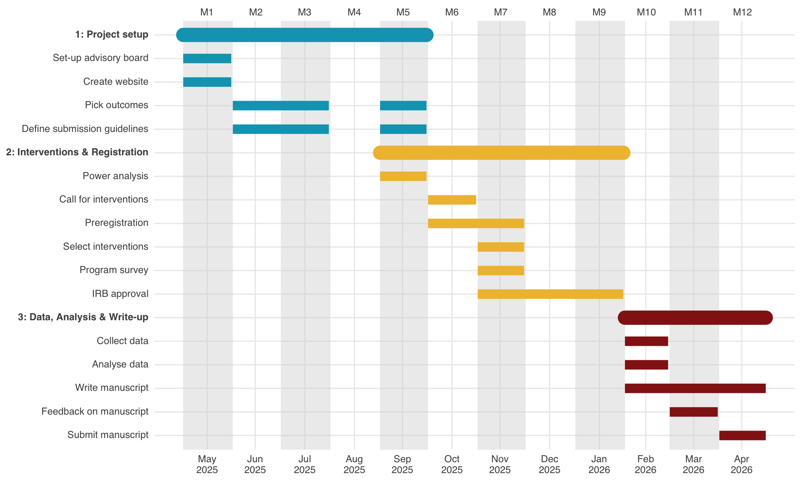

| Dimension | Item | Response Options |
|---|---|---|
| We are interested in your general opinion about climate scientists, including scientists working at universities, in government, at companies, and for non-profit organizations. | ||
| Competence | How competent or incompetent are most climate scientists? | (1) Very incompetent, (2) Somewhat incompetent, (3) Neither competent nor incompetent, (4) Somewhat competent, (5) Very competent |
| How intelligent or unintelligent are most climate scientists? | (1) Very unintelligent, (2) Somewhat unintelligent, (3) Neither intelligent nor unintelligent, (4) Somewhat intelligent, (5) Very intelligent | |
| How qualified or unqualified are most scientists when it comes to conducting high-quality research? | (1) Very unqualified, (2) Somewhat unqualified, (3) Neither qualified nor unqualified, (4) Somewhat qualified, (5) Very qualified | |
| Integrity | How honest or dishonest are most climate scientists? | (1) Very dishonest, (2) Somewhat dishonest, (3) Neither honest nor dishonest, (4) Somewhat honest, (5) Very honest |
| How ethical or unethical are most climate scientists? | (1) Very unethical, (2) Somewhat unethical, (3) Neither ethical nor unethical, (4) Somewhat ethical, (5) Very ethical | |
| How sincere or insincere are most climate scientists? | (1) Very insincere, (2) Somewhat insincere, (3) Neither sincere nor insincere, (4) Somewhat sincere, (5) Very sincere | |
| Benevolence | How concerned or unconcerned are most climate scientists about people’s wellbeing? | (1) Very unconcerned, (2) Somewhat unconcerned, (3) Neither concerned nor unconcerned, (4) Somewhat concerned, (5) Very concerned |
| How eager or uneager are most climate scientists to improve others’ lives? | (1) Very uneager, (2) Somewhat uneager, (3) Neither eager nor uneager, (4) Somewhat eager, (5) Very eager | |
| How considerate or inconsiderate are most climate scientists of others’ interests? | (1) Very inconsiderate, (2) Somewhat inconsiderate, (3) Neither considerate nor inconsiderate, (4) Somewhat considerate, (5) Very considerate | |
| Openness | How open, if at all, are most climate scientists to feedback? | (1) Not open, (2) Somewhat not open, (3) Neither open nor not open, (4) Somewhat open, (5) Very open |
| How willing or unwilling are most climate scientists to be transparent? | (1) Very unwilling, (2) Somewhat unwilling, (3) Neither willing nor unwilling, (4) Somewhat willing, (5) Very willing | |
| How much or little attention do climate scientists pay to others' views? | (1) Pay very little attention to others' views, (2) Pay only a small amount of attention to others' views, (3) Pay a moderate amount of attention to others' views, (4) Pay a lot of attention to others' views, (5) Pay a great deal of attention to others' views |
Motivation
Climate change is one of the most pressing societal issues and requires urgent action at both the policymaking and individual level (Calvin et al. 2023; Rogelj et al. 2023).
Trust in climate scientists is one of the strongest predictors of belief in climate change, support for climate policy, and climate action (Todorova et al. 2025; Cologna and Siegrist 2020; Hornsey et al. 2016).
While trust in scientists is moderately high globally (Cologna et al. 2025), climate scientists have consistently been found to be less trusted than scientists from other fields and scientists in general (Druckman et al. 2024; Ghasemi et al. 2024; Schrøder 2023; Schug, Bilandzic, and Kinnebrock 2024). Lower trust in climate scientists could hamper societies’ ability to address climate change, resulting in high personal and societal costs.
Increasing trust in climate scientists may therefore be an important lever to accelerate climate action and strengthen societal resilience to climate change. There is currently only a small number of behavioral intervention studies on increasing trust in climate scientists. The STICS project aims to fill this gap.
Outcomes
Climate scientists’ trustworthiness
Our main outcome of interest is people’s perception of climate scientists’ trustworthiness. In addition to this, we will also measure attitudes towards climate change, support for climate policies, normative perceptions of climate scientists, and pro-climate behavioral outcomes.
Behavioral measures
Donation
To assess consequential and impactful behavior, participants will be given the option to donate a monetary bonus to a non-profit scientific association in the area of climate science (American Geophysical Union in the US or European Geosciences Union in Switzerland) or keep it for themselves. AGU and EGU were chosen because they are the leading scientific associations for scientists working on climate change. Participants will be informed of the following:
“For the next question, we would like you to allocate $10 [10 CHF for Swiss participants] between yourself and the American Geophysical Union (AGU) [European Geosciences Union (EGU)]—a non-profit scientific association that envisions a thriving, sustainable and equitable future supported by scientific discovery, innovation and action. AGU [EGU] is the largest scientific association in the area of climate change in the US [in Europe], with over 15,000 scientist members. You can give all of the money to AGU [EGU] and keep none for yourself, or you can keep all the money for yourself and give none to AGU [EGU], or you can pick any split in between.”
[Slider]
“Important: We will randomly select a subset of 100 participants and actually implement their choices.”
Petition
[to be done]
Normative perceptions & Willingness to be vulnerable
| Item | Response Options |
|---|---|
| Normative perceptions of climate scientists | |
| Climate scientists should work closely with politicians to integrate scientific results into policy-making | (1) Strongly disagree, (2) Disagree, (3) Neither agree nor disagree, (4) Agree, (5) Strongly agree |
| Climate scientists should actively advocate for specific policies | (1) Strongly disagree, (2) Disagree, (3) Neither agree nor disagree, (4) Agree, (5) Strongly agree |
| Climate scientists should communicate their findings to politicians | (1) Strongly disagree, (2) Disagree, (3) Neither agree nor disagree, (4) Agree, (5) Strongly agree |
| Climate scientists should be more involved in the policy-making process | (1) Strongly disagree, (2) Disagree, (3) Neither agree nor disagree, (4) Agree, (5) Strongly agree |
| Climate scientists should communicate about science with the general public | (1) Strongly disagree, (2) Disagree, (3) Neither agree nor disagree, (4) Agree, (5) Strongly agree |
| Climate scientists should remain independent from the policy-making process | (1) Strongly disagree, (2) Disagree, (3) Neither agree nor disagree, (4) Agree, (5) Strongly agree |
| Willingness to be vulnerable to the advice of climate scientists | |
| How much or little should people rely on climate scientists’ guidance when making lifestyle choices related to climate science? | (1) Not at all, (2) A little, (3) A moderate amount, (4) A lot, (5) A great deal |
| How much or little should governments rely on climate scientists’ guidance when making decisions related to climate science? | (1) Not at all, (2) A little, (3) A moderate amount, (4) A lot, (5) A great deal |
| How much or little control do you want climate scientists to have on government decisions related to science? | (1) No control at all, (2) A little control, (3) A moderate amount of control, (4) A lot of control, (5) Complete control |
Funding
[to be discussed]
Form the National Science Foundation (NSF) – Science & Engineering Indicators:
Even if it brings no immediate benefits, scientific research that advances the frontiers of knowledge is necessary and should be supported by the federal government. [Strongly disagree - Strongly agree]1
Participants
Sample size
An a priori power analysis using G*Power (Faul et al., 2007), shows that for a One Way ANOVA with 10 conditions (9 interventions and one control condition), to achieve 95% power to detect a small effect size f of at least f = 0.05, at an alpha level of 0.05, a sample of N = 9,450 participants is needed. Since the interventions will be tested across population segments, and the approximate size of the segments will be determined in WP1, we err on the conservative side and aim to collect a US sample of N = 10,000 and a Swiss sample of N = 10,000, for a total of N = 20,000 participants, with approximately N = 1,000 participants per condition per country.
Once we have selected interventions, we will run a final power simulation to be included in our preregistration.
Recruitment
We will recruit representative samples for age, gender, and education in both countries.
Open science
Following best open-science research practices, a detailed overview of data collection procedures, research questions, and analyses will be preregistered on the Open Science Framework.
Upon publication, all data, code, and materials will be publicly available.
Timeline

References
Calvin, Katherine, Dipak Dasgupta, Gerhard Krinner, Aditi Mukherji, Peter W. Thorne, Christopher Trisos, José Romero, et al. 2023. “IPCC, 2023: Climate Change 2023: Synthesis Report. Contribution of Working Groups I, II and III to the Sixth Assessment Report of the Intergovernmental Panel on Climate Change [Core Writing Team, H. Lee and J. Romero (Eds.)]. IPCC, Geneva, Switzerland.” https://doi.org/10.59327/IPCC/AR6-9789291691647.
Cologna, Viktoria, Niels G. Mede, Sebastian Berger, John Besley, Cameron Brick, Marina Joubert, Edward W. Maibach, et al. 2025. “Trust in Scientists and Their Role in Society Across 68 Countries.” Nature Human Behaviour, January, 1–18. https://doi.org/10.1038/s41562-024-02090-5.
Cologna, Viktoria, and Michael Siegrist. 2020. “The Role of Trust for Climate Change Mitigation and Adaptation Behaviour: A Meta-Analysis.” Journal of Environmental Psychology 69 (June): 101428. https://doi.org/10.1016/j.jenvp.2020.101428.
Druckman, James N., Jonathan Schulman, Alauna C. Safarpour, Matthew Baum, Katherine Ognyanova, Mailbox Kenny, Kristin Lunz Trujillo, et al. 2024. “Continuity and Change in Trust in Scientists in the United States: Demographic Stability and Partisan Polarization.” https://doi.org/10.2139/ssrn.4929030.
Ghasemi, Omid, Viktoria Cologna, Niels G. Mede, Samantha Stanley, Noel Strahm, Robert M Ross, Mark Alfano, et al. 2024. “Investigating the Trust Gap Between Scientists and Climate Scientists in 68 Countries.” https://doi.org/10.31219/osf.io/f3qbu.
Hornsey, Matthew J., Emily A. Harris, Paul G. Bain, and Kelly S. Fielding. 2016. “Meta-Analyses of the Determinants and Outcomes of Belief in Climate Change.” Nature Climate Change 6 (6): 622–26. https://doi.org/10.1038/nclimate2943.
Ophir, Yotam, Dror Walter, Patrick E. Jamieson, and Kathleen Hall Jamieson. 2023. “Factors Assessing Science’s Self-Presentation Model and Their Effect on Conservatives’ and Liberals’ Support for Funding Science.” Proceedings of the National Academy of Sciences 120 (38): e2213838120. https://doi.org/10.1073/pnas.2213838120.
Rogelj, Joeri, Taryn Fransen, Michel G. J. den Elzen, Robin D. Lamboll, Clea Schumer, Takeshi Kuramochi, Frederic Hans, Silke Mooldijk, and Joana Portugal-Pereira. 2023. “Credibility Gap in Net-Zero Climate Targets Leaves World at High Risk.” Science 380 (6649): 1014–16. https://doi.org/10.1126/science.adg6248.
Schrøder, Thor Bech. 2023. “Don’t Tell Me What I Don’t Want to Hear! Politicization and Ideological Conflict Explain Why Citizens Have Lower Trust in Climate Scientists and Economists Than in Other Natural Scientists.” Political Psychology 44 (5): 961–81. https://doi.org/10.1111/pops.12866.
Schug, Markus, Helena Bilandzic, and Susanne Kinnebrock. 2024. “Public perceptions of trustworthiness and authenticity towards scientists in controversial scientific fields.” Journal of Science Communication 23 (9): A03. https://doi.org/10.22323/2.23090203.
Todorova, Boryana, David Steyrl, Matthew J. Hornsey, Samuel Pearson, Cameron Brick, Florian Lange, Jay J. Van Bavel, Madalina Vlasceanu, Claus Lamm, and Kimberly C. Doell. 2025. “Machine Learning Identifies Key Individual and Nation-Level Factors Predicting Climate-Relevant Beliefs and Behaviors.” Npj Climate Action 4 (1): 46. https://doi.org/10.1038/s44168-025-00251-4.
Footnotes
The question, with slightly different wording, has been asked in Ophir et al. (2023): “How strongly do you disagree or agree that even if it brings no immediate benefits, scientific research that advances the frontiers of knowledge should be funded by the federal government? (5-point likert scale)”↩︎